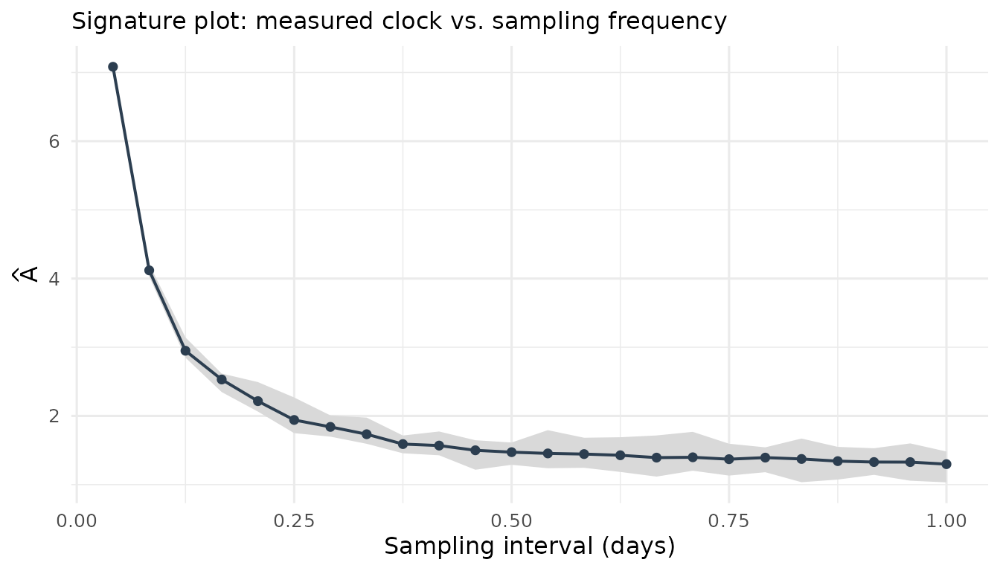
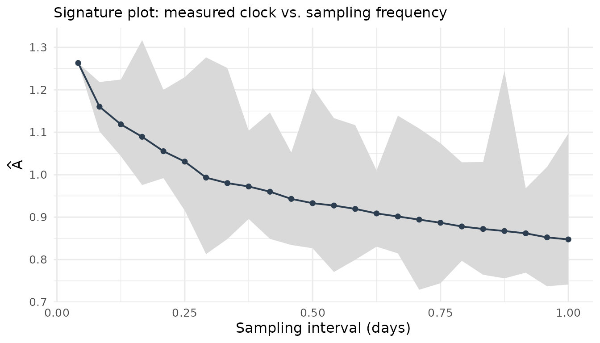

Validating the event-clock estimator
Source:vignettes/eventclock-validation.Rmd
eventclock-validation.RmdThis vignette stress-tests the estimator
against data simulated from the exact transition law of the
model (ec_simulate_path()), so every deviation is
attributable to the estimator, not to model error. Helper to turn
simulated paths into event_prices:
path_to_ep <- function(p) {
as_event_prices(
tibble::tibble(time = as.Date("2020-01-01") + p$step, q = p$q),
clip = c(1e-8, 1 - 1e-8)
)
}
estimate_A <- function(n_steps, A, q = 0.4, reps = 200, ...) {
vapply(seq_len(reps), function(i) {
p <- ec_simulate_path(1, n_steps, q = q, A = A, ...)
event_clock(path_to_ep(p), methods = "rv")$A
}, numeric(1))
}Consistency and finite-sample precision
The estimator is unbiased at every sampling frequency (up to the tiny drift term) and its dispersion shrinks with the number of observations:
grid <- c(15, 30, 60, 120, 250)
sims <- lapply(grid, estimate_A, A = 0.5)
tab <- data.frame(
n_obs = grid,
mean = sapply(sims, mean),
bias_pct = 100 * (sapply(sims, mean) / 0.5 - 1),
sd = sapply(sims, sd),
rmse = sapply(sims, function(s) sqrt(mean((s - 0.5)^2)))
)
knitr::kable(tab, digits = 3)| n_obs | mean | bias_pct | sd | rmse |
|---|---|---|---|---|
| 15 | 0.520 | 3.986 | 0.202 | 0.203 |
| 30 | 0.522 | 4.468 | 0.132 | 0.134 |
| 60 | 0.505 | 0.964 | 0.088 | 0.088 |
| 120 | 0.502 | 0.427 | 0.070 | 0.070 |
| 250 | 0.501 | 0.289 | 0.043 | 0.043 |
Even the paper-sized windows (a one-month window has about 30 daily observations) are unbiased; the price of short windows is dispersion, not bias — which is why interval estimates matter.
Confidence-interval coverage
event_clock(se = TRUE) reports quarticity-based standard
errors with log-scale intervals. Their coverage is close to nominal:
coverage <- function(conf, reps = 300, n_steps = 60, A = 0.5) {
hits <- vapply(seq_len(reps), function(i) {
p <- ec_simulate_path(1, n_steps, q = 0.4, A = A)
r <- event_clock(path_to_ep(p), methods = "rv", se = TRUE, conf = conf)
r$ci_lo <= A && A <= r$ci_hi
}, logical(1))
mean(hits)
}
data.frame(
nominal = c(0.90, 0.95),
empirical = c(coverage(0.90), coverage(0.95))
)
#> nominal empirical
#> 1 0.90 0.8833333
#> 2 0.95 0.9500000Outcome independence: the measure-robustness property in action
Quadratic variation does not care which outcome eventually realizes — this is the observable footprint of measure robustness (a change of measure reweights outcomes; it cannot change the estimate computed from a given path):
p <- ec_simulate_path(400, 60, q = 0.4, A = 0.5)
qv <- vapply(split(p$L, p$path), function(L) sum(diff(L)^2), numeric(1))
J <- vapply(split(p$J, p$path), function(j) j[1], numeric(1))
data.frame(
outcome = c("J = 1", "J = 0"),
mean_A_hat = c(mean(qv[J == 1]), mean(qv[J == 0])),
n_paths = c(sum(J == 1), sum(J == 0))
)
#> outcome mean_A_hat n_paths
#> 1 J = 1 0.4935467 169
#> 2 J = 0 0.5079064 231Both conditional means sit at the same true : the clock measures how much was learned, not what was learned.
Lumpy information: what the robustness variants actually do
Real event clocks are lumpy — debates and verdicts, not a smooth
flow. With jump_share, the simulator concentrates part of
in a few jump steps, and the estimator battery reacts exactly as the
theory says it should:
lumpy <- lapply(seq_len(200), function(i) {
p <- ec_simulate_path(1, 60, q = 0.4, A = 0.5,
jump_share = 0.5, n_jumps = 1)
event_clock(path_to_ep(p))[, c("method", "A")]
})
agg <- do.call(rbind, lumpy)
knitr::kable(
aggregate(A ~ method, data = agg, FUN = mean),
digits = 3,
caption = "Mean estimate across 200 lumpy paths (true A = 0.5, half of it in one jump)"
)| method | A |
|---|---|
| bipower | 0.301 |
| largest1 | 0.240 |
| largest2 | 0.214 |
| rv | 0.502 |
| truncated | 0.236 |
rv recovers total clock time including the jump;
bipower, truncated, and largest1
estimate (roughly) the smooth component only — the gap between
rv and bipower is the jumpiness index. None of
these is “wrong”; they answer different questions, and comparing them is
the point.
Microstructure noise and the snapshot rule
Traded quotes bounce between bid and ask on a coarse tick grid. Additive noise inflates measured variation at fine sampling — the classic signature-plot diagnostic, here on simulated data with known truth:
p <- ec_simulate_path(1, 2000, q = 0.4, A = 1)
noisy <- ec_ilogit(p$L + rnorm(nrow(p), sd = 0.04))
ep_noisy <- as_event_prices(
tibble::tibble(time = as.POSIXct("2024-01-01", tz = "UTC") +
3600 * p$step, q = noisy),
clip = c(1e-8, 1 - 1e-8)
)
plot_signature(ec_signature(ep_noisy, max_every = 24))
The finest grid overstates the clock (noise variance is counted once per increment); sparse sampling converges toward the true . On real data the same pattern appears — this is the hourly-vs-daily gap of the 2024 Polymarket series:
data(polymarket2024)
plot_signature(ec_signature(as_event_prices(polymarket2024), max_every = 24))
which is why the one-snapshot-per-day rule of pm_daily()
is the robust default for daily-horizon work.
Data-quality screening
Before estimating anything, screen the input series:
ec_validate(as_event_prices(brexit2016, time = "date", price = "q_leave",
market_id = "Brexit: Leave"))
#> -- Event-price data-quality report: Brexit: Leave
#> Coverage: 119 obs, 2016-02-26 to 2016-06-23, median spacing 1 days, 0 NA
#> Clipping: 0.0% of observations outside the clipping bounds
#> Staleness: 11.0% zero increments, longest stale run 2 obs
#> Tick: smallest non-zero move 0.001
#> Gaps: 0 gap increment(s), largest 1 days
#> Outliers: max |dL| = 0.292 (5.5 robust SDs)ec_validate() reports coverage, staleness, tick size,
gaps, and outliers — in the package’s flag-don’t-drop spirit: nothing is
altered, everything is visible.